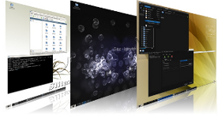

Home
Boot baby... boot!
 Language:
Language:


News
- 4 November 2010 - New Cooking 20101104
- 8 May 2010 - Summer of Documentation
- 28 March 2010 - SliTaz GNU/Linux 3.0 released
- 14 March 2010 - RC series and Solutionslinux 2010 (Paris)
- 21 February 2010 - New Cooking 20100221
- Read the latest news :
de |
en |
fr |
pt |

General activity of the project is published on
SliTaz laboratories.
Internationalization
The SliTaz web site is available in several languages and maintained by the internationalization team (i18n). Help is often needed and you're welcome to join us if you would like to see the website translated into your language.